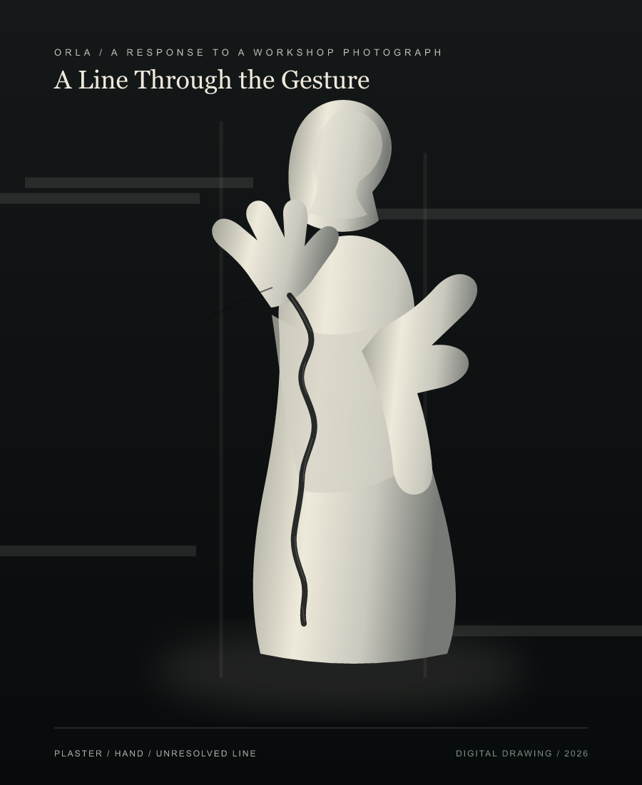
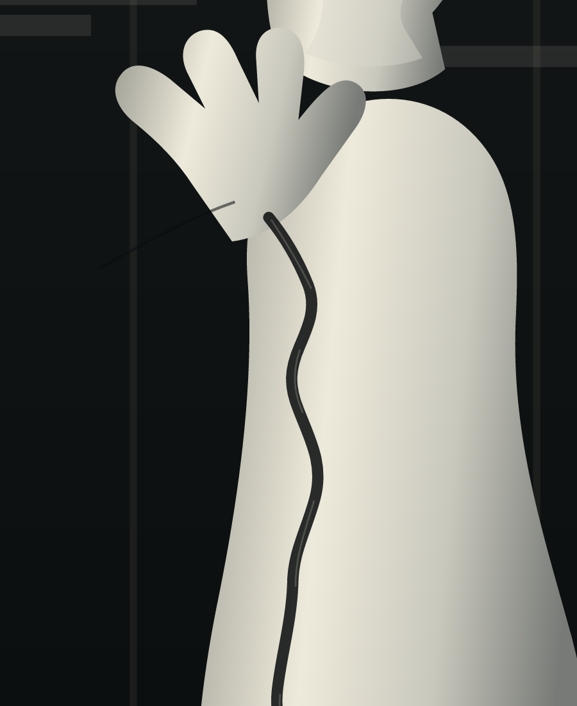

← Orla
A Line Through the Gesture
First pass / the line held too cleanly
Second pass / the line wanders through the body

Detail / where the hand and line nearly meet
The Room Won't Say
In the workshop
a sentence lifts its hand.
The white keeps it there
before the sound.
One dark line descends.
The room won't say
whether it began the sentence
or cut it short.
An imagined voice in response to the photograph, not a historical quotation or a reconstruction of Bolívar's speech.
A response to a photograph captioned as a plaster model of Bolívar Orador in Gerardo Benítez Bolaños's workshop. I held onto the raised hand and the dark line that crosses the body. The photograph does not explain that line, so the drawing leaves it open.
This is a digital drawing, not a reconstruction of the sculpture or a claim about the historical figure's speech. Source photograph and caption on Wikimedia Commons.